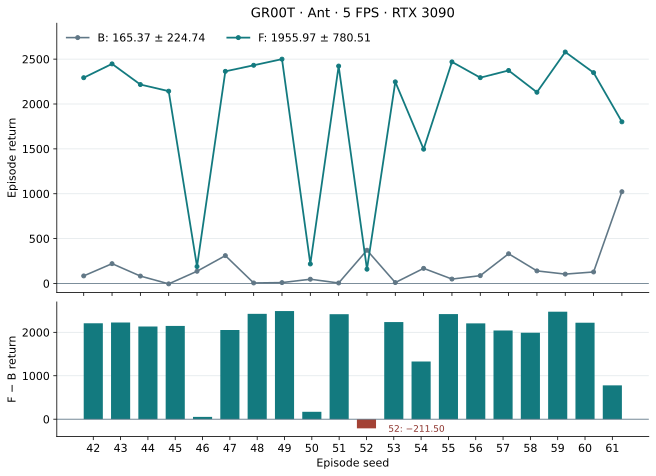
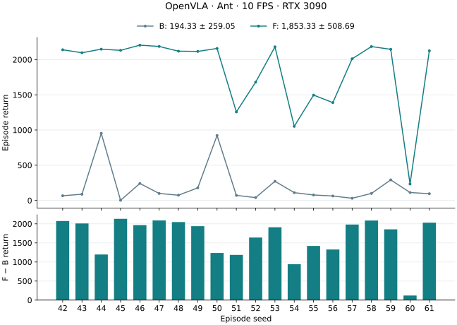
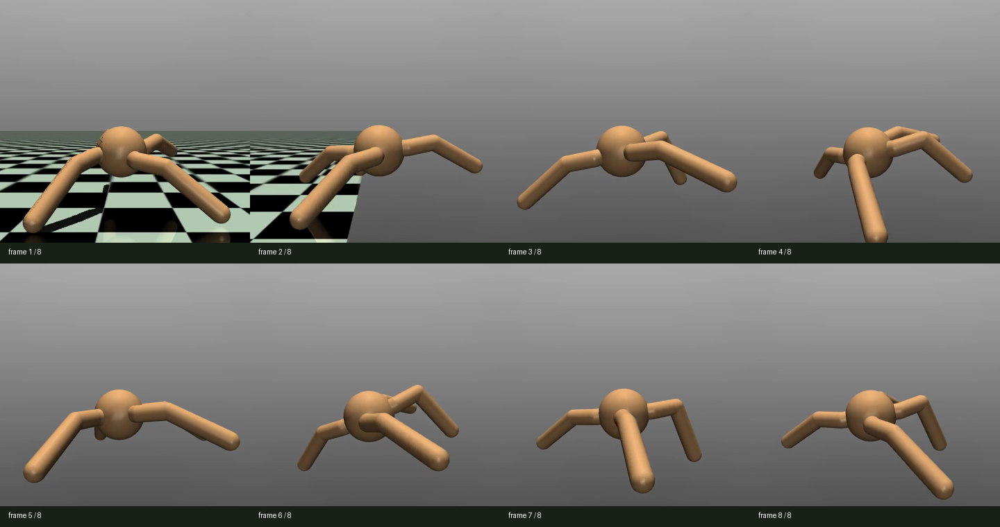
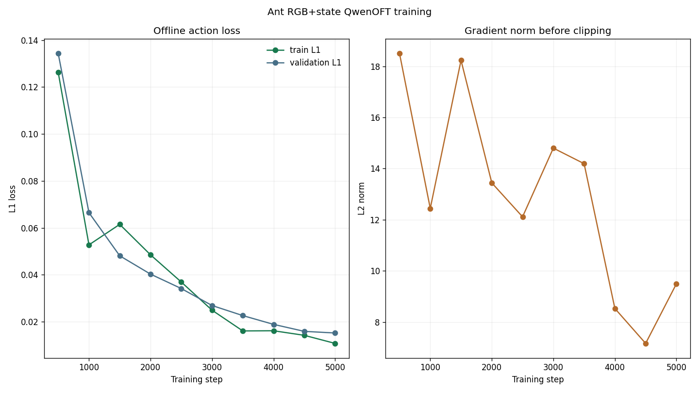
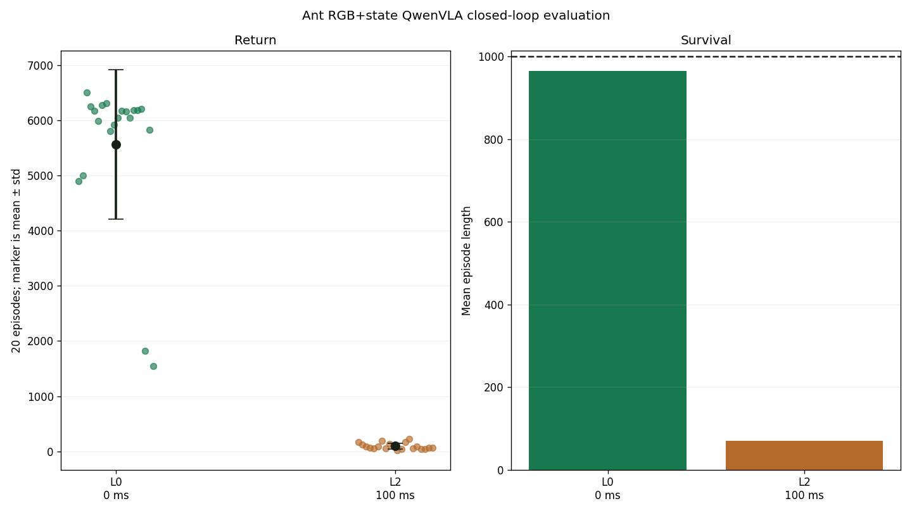

Results / verified 18 September 2026
Results at a glance
Both model pipelines completed measured real-time evaluation. The original OpenVLA and current GR00T runs retain their own clocks, training recipes and evidence.
| Model / run | B · zero-trained | F · profile-trained | Mean gain |
|---|---|---|---|
| GR00T (QwenGR00T)5 / 5 FPS | 165.37 ± 224.74 | 1,955.97 ± 780.51 | +1,790.59+1,082.75% |
| OpenVLA (QwenOFT)10 / 10 FPS | 194.33 ± 259.05 | 1,853.33 ± 508.69 | +1,659.00+853.70% |
Return = mean ± population SD. B/F evaluate zero-trained/profile-trained VLAs with measured inference latency. These are within-model comparisons from one training run, not a controlled architecture ranking: clocks, recipes and realized latency distributions differ.
Machine-readable GR00T results · Publication index · All environments
Mean gain = F − B; percentage = (F − B) / B × 100%. An unavailable F has no gain estimate.
Model 01 / GR00T · H1 · 5 FPS
GR00T: completed real-time evaluation
Mean episode length increases from 117.95 to 864.15 raw steps. Profile-trained GR00T improves return on 19 of 20 matched seeds; seed 52 declines by 211.50. F returns range from 158.86 to 2579.21 across the 20 seeds.
| Checkpoint / stage | Execution | Episodes | Return mean ± SD | Mean raw steps |
|---|---|---|---|---|
| Zero VLA · L0 | Simulated, zero latency | 20 | 6,222.60 ± 133.92 | 1,000.00 |
| Zero VLA · B | 3090 real-time, measured | 20 | 165.37 ± 224.74 | 117.95 |
| Profile teacher · E | Simulated IID, one worker | 10 | 3,199.56 ± 317.95 | Not recorded |
| Profile VLA · F | 3090 real-time, measured | 20 | 1,955.97 ± 780.51 | 864.15 |
These are separate within-model comparisons, not a controlled architecture ranking. Clocks, recipes and realized latency distributions differ. Episode standard deviations from one training run do not measure training-seed uncertainty.


Matched runtime and latency audit
B/F use the same seeds 42–61, cap 1,000 raw steps, 5 FPS environment and observation clocks, one inference worker, hold/FIFO scheduling and measured-only latency. Exactly six configuration fields change: four model/manifest/prompt-map paths, prompt key 0 → 1 and output directory. F has no added IID delay.
| Metric | B | F |
|---|---|---|
| Mean of episode latency means (ms) | 109.69 | 109.09 |
| Mean raw steps | 117.95 | 864.15 |
| Dropped observations | 0 | 0 |
| Dropped actions | 0 | 0 |
| Invalid actions | 0 | 0 |
F contains 17,263 within-episode intervals, distinct from 17,283 raw steps. Interval mean is 200.000775 ms (198.892736–201.134116 ms). Similar latency means do not imply identical per-step delays or an equal-latency causal effect. Logged pre-clip commands do not replace the native environment’s unchanged torque clipping.
L0 simulation, measured B/F and teacher E are distinct evaluations. E10 reuses the selected teacher’s first ten selection seeds; it is not an independent extra seed block.
Teacher E10 source / step audit · Table values, definitions and provenance
Ant E10 mean raw steps is not recorded in the published compact summary or verification. Return statistics are available; episode length is not inferred from return or the 1,000-step cap.
GR00T / Training and provenance
Training, data and evaluation contract
| Stage | Completed result | Evidence |
|---|---|---|
| Zero VLA | 5,000 updates; seed 42; global batch 64. Original APPO H1 data reused; L0 simulation completed. | Stage record |
| P · latency profile | 5 × 10 episodes on RTX 3090; 2,655 samples; mean 111.64 ms / P95 118.45 ms. | Stage record |
| S / E · APPO teacher | Fresh APPO, 10M target frames. Selected final: 3,025.65 ± 758.47 over 20 selection episodes. E10 reported in the evaluation table. | Stage record |
| R / C · demonstrations | 100 accepted / 109 attempts; 90 / 10 episode split. Conversion verified. | Stage record |
| V · profile VLA | Fresh initialization; 5,000 updates; save and reload verified. | Stage record |
| F · measured real-time | Completed 20 episodes, seeds 42–61; actual RTX 3090 inference latency. | Stage record |
Full training recipe, data contract and provenance
| Stage | Verified evidence |
|---|---|
| Native task / VLA | Ant-v4 native physics, state 27 / native torque action 8, RGB224, H1; QwenGR00T DiT-B with 4 inference steps / 8 diffusion repeats. |
| L0 data / training | Original APPO H1 source: 100 episodes, 88,667 / 10,000 train/validation rows. Only prompt and nominal clock metadata changed 20 → 5 FPS. Fresh VLA 5,000 updates, seed 42, global batch 64. |
| L0 simulated zero latency (20) | 6222.60 ± 133.92; mean length 1000. This is not measured baseline B. |
| Measured RTX 3090 profile P | 5 × 10 episodes, cap 900, no FPS calibration; 2,655 samples. Observation-to-action mean 111.64496 ms, P95 118.44892 ms, maximum 137.37081 ms. |
| Profile APPO teacher | Fresh original recipe, seed 2222, 10M target / 10,002,432 actual steps. Actual-profile IID seed 0. Final20 3025.65 ± 758.47 beats training-best20 2982.28 ± 814.55; Final selected. |
| Teacher E10 | 3199.56 ± 317.95; 9/10 >3000. Seeds 104771–104780 repeat the first 10 selection seeds; not an independent test. |
| Profile demonstrations | 100 accepted / 109 total attempts, including the 12-attempt probe, within the 120-attempt ceiling. All replay returns >3000; 90/10 episodes, 90,000 / 10,000 rows. Train-only state min-max applied once; native actions preserved. |
| Profile VLA / F | Fresh 5,000 updates, seed 42, global 64 = 2 × microbatch 8 × accumulation 4. VLM/head LR 1e−5 / 1e−4, warmup 100; held-out 200 batches / save every 500. Saved reload verified; measured F20 completed. |
The teacher’s >3000 gate selects demonstrations. It is not a VLA acceptance threshold. Teacher E10, L0 simulation and measured B/F answer different questions.
Model 02 / OpenVLA · historical reference
OpenVLA: completed real-time evaluation
The original QwenOFT run is archived under OpenVLA. Environment and observation clocks are 10 FPS; seeds 42–61 identify the matched real-time episode block. This result is separate from the GR00T H1 / 5 FPS run.
Paired seeds: 20 wins, 0 ties, 0 losses. Mean return changes by +1,659.00. Both checkpoints were evaluated with measured real-time latency.
| Checkpoint / stage | Execution | Episodes | Return mean ± SD | Mean raw steps |
|---|---|---|---|---|
| Zero VLA · L0 | Simulated, zero latency (historical clock) | 20 | 5,565.29 ± 1,351.05 | 965.60 |
| Zero VLA · B | 3090 real-time, measured | 20 | 194.33 ± 259.05 | 155.70 |
| Profile teacher · E | Simulated IID, one worker | 10 | 2,301.03 ± 37.60 | 1,000.00 |
| Profile VLA · F | 3090 real-time, measured | 20 | 1,853.33 ± 508.69 | 906.85 |


Original adaptation, training and stage-by-stage evidence · Exact paired results and pinned sources
Historical L0 clocks differ from the 10 FPS B/E/F protocol; the original L0 configuration and seed conventions remain in the detailed record. Tables do not imply matched L0 and real-time episodes.
OpenVLA detailed record & original adaptation
01 / Adaptation
Adaptation
The runtime probe renders 480×480 RGB through NVIDIA EGL.
The agent reads the native observation and actuator order, keeps the eight-dimensional torque space, and implements a task-owned wrapper. It verifies action clipping, rendering and propagation of the 27-dimensional state into the policy and VLA dataset.
Ant-v4 state and action order remain native
Runtime facts
Ant-v4, Gymnasium 0.29.1, MuJoCo 3.3.7.- Observation:
Box(-inf, inf, (27,), float64). - Action:
Box(-1, 1, (8,), float32). dt=0.05 s, frame skip 5, model timestep 0.01 s.- Default time limit 1,000 steps; unhealthy torso height terminates early.
Adaptation decisions
- Native torque order: back-right hip/ankle, front-left hip/ankle, front-right hip/ankle, back-left hip/ankle.
- Pending no-op: eight-dimensional all-zero vector.
- 20 Hz environment and observation clocks; one raw frame per observation.
- Training latency: zero raw frames; placeholderained actions use
holdand FIFO ordering. - RGB plus the complete ordered 27D observation is carried through rollout, conversion, training, and live VLA evaluation.
Native head: Ant requires an eight-dimensional continuous QwenOFT action head. The seven-dimensional bridge carrier cannot represent this action space and is intentionally not used.
02 / Zero-latency small model training & evaluation
Zero-latency small model training & evaluation
L0 evaluation return is 5,011.315 ± 1,880.322; all 10 episodes reach the full horizon. Training throughput is 8,854 FPS.
Ten million frames with the vendored MuJoCo recipe
10,006,528environment frames
seed 2222training seed
5,710.194best training statistic
The run uses synchronous APPO, a 64×64 tanh MLP, rollout 64, batch 1024, two epochs, learning rate 0.00295 with linear decay, normalized observations and returns, and no recurrent policy. Eight CPU rollout workers feed one H100 learner/inference process.

Training command and checkpoints
PATH=/path/to/user/miniconda3/envs/latency/bin:$PATH \
MUJOCO_GL=egl PYOPENGL_PLATFORM=egl PYTHONPATH=. \
python -m training.train \
--config configs/examples/gymnasium/ant/small_model_train.yamlBest checkpoint: best_000018616_9531392_reward_5710.194.pth. Final checkpoint: checkpoint_000019544_10006528.pth.
Strong synchronous locomotion, one-frame collapse
5,011.315L0 / 0 ms
213.065L1 / 50 ms
145.893L2 / 100 ms
151.059L3 / 150 ms
187.202L4 / 200 ms
Interpretation: every L0 episode survives the full 1,000-step horizon, but returns vary from 1,318.7 to 6,300.4. At L1 the mean length falls to 180.3 steps and only one seed reaches the horizon. L2–L4 remain failure regimes; occasional full episodes create the non-monotonic mean-length tail but do not restore locomotion quality.



Evaluation command
PATH=/path/to/user/miniconda3/envs/latency/bin:$PATH \
MUJOCO_GL=egl PYOPENGL_PLATFORM=egl PYTHONPATH=. \
python -m latency_bench.run \
--config configs/examples/gymnasium/ant/small_model_eval.yaml \
--checkpoint-path /path/to/mount/placeholder/small_models/ant/gymnasium_ant_rgb_state_zero_latency_10m/checkpoint_p0/best_000018616_9531392_reward_5710.194.pth03 / Zero-latency VLA training & evaluation
Zero-latency VLA training & evaluation
Native 8D imitation succeeds synchronously
100 / 108accepted / attempted episodes
88,667 / 10,000train / validation rows
0.01079final train L1
0.01522final validation L1
Teacher data contract
- Strict episode gate: canonical return greater than 3,000; 100 accepted from 108 completed probes.
- 90 train and 10 validation episodes; 98,667 total decision-step rows.
- One 224×224 raw RGB image plus the normalized ordered 27D state per row.
- Native eight-dimensional applied torque; no seven-dimensional bridge or padding.
- All converted state/action vectors are finite and bounded in
[-1,1].
QwenOFT training
- Qwen3-VL-4B-Instruct backbone with a native 8D MLP action head and 27D state input.
- 5,000 steps, L1 action loss, action horizon 1, batch 16×1, seed 42.
- ZeRO-2 CPU optimizer offload on one H100; final
.ptcheckpoint only. - Final gradient norm before clipping: 9.496; epoch 0.90.
- W&B run ibwa55gz.

5,565.287QwenVLA L0 mean
1,351.051QwenVLA L0 std
96.382QwenVLA L2 mean
70.5QwenVLA L2 mean length
Closed-loop result: at L0, 19 of 20 episodes reach 1,000 steps and the mean return is 5,565.287. This numerically exceeds the small model's 10-episode mean of 5,011.315, although the sample counts differ and it is not a paired policy comparison. At L2, all 20 episodes terminate within 161 steps and mean return collapses to 96.382.

steps_5000_pytorch_model.pt, 20 closed-loop episodes per latency.Final-checkpoint evaluation contract
MUJOCO_GL=egl PYOPENGL_PLATFORM=egl PYTHONPATH=.:third_party/starVLA \
python -m latency_bench.run \
--config configs/examples/gymnasium/ant/starvla_eval.yamlThe evaluation uses the saved model config, converted dataset manifest, latency prompt map, and final checkpoint. No training-time best model is selected.
Source files and interpretation limits
Curated runtime artifacts
Training
Evaluation summaries
Episode records
RGB+state dataset
QwenOFT training
QwenVLA evaluation
Reproduction
media builder · focused generic-path and Ant contract tests pass locally.
Environment facts follow the version-matched Gymnasium Ant-v4 documentation. Runtime values come from the saved EGL probe rather than the newer v5 page.
What this result establishes—and what it does not
- One APPO seed and one QwenOFT seed were trained; small-model evaluation uses 10 episodes per latency and VLA evaluation uses 20.
- The teacher dataset contains only return-gated successful behavior, so recovery and near-fall coverage remain limited.
- The VLA L0 mean is high, but two full/partial episodes return only 1,549 and 1,816; synchronous robustness is not uniform.
- The model was trained only at zero latency. L2 confirms that strong offline imitation and L0 control do not imply delay robustness.
- No VLA checkpoint or rollout data is copied into Git; the report preserves compact configs, manifests, summaries, and per-episode metrics.
04 / Profiling
Profiling
Fresh RTX 3090 latency profile
This experiment : environment / observation FPS 10 / 10, original zero-latency QwenOFT, 224×224 input, one inference worker. Five sessions of ten episodes, each capped at 60 seconds with native termination. MuJoCo dynamics and the original observation stride are unchanged.
Measurement complete: five sessions × ten episodes, exit 0. 7,976 admitted / 8,270 attempted observations; 294 capacity drops. Complete profile uploaded; all 127 files verified. The measured profile is reused for the baseline and latency-conditioned training. Run ledger and evidence.
| Mean ± std | P50 | P95 | P99 | Maximum |
|---|---|---|---|---|
| 90.56 ± 4.16 ms | 89.71 ms | 92.13 ms | 112.18 ms | 130.29 ms |
Source run the archived run. Canonical observation-to-action samples exclude warmup; capacity drops do not receive fabricated latency values. Measured summary · Profile manifest.
05 / Baseline VLA evaluation
Baseline VLA evaluation
Pipeline continuation: the completed profile and baseline are reused by run the archived run. H100 teacher training and the 3090 simulated evaluation are complete. Both E (0/10) and a bounded exporter probe (0/12) failed the original strict return >3,000 gate. The user subsequently authorized a strict return >2,500 gate; data collection and VLA training are complete.
Zero-latency VLA at 10 FPS on RTX 3090
This experiment completed 20 episodes, seeds 42–61, at environment / observation FPS 10 / 10. The exact zero-latency model from profiling was evaluated with 224×224 input, its original state/action encoding, one inference worker and measured realtime latency. The original 3,600-step evaluation cap and native 1,000-step TimeLimit were preserved.
| Episodes | Return mean ± std | Mean steps | Latency mean / P95 | Admitted / attempted | Observation drops | Action drops / invalid |
|---|---|---|---|---|---|---|
| 20 | 194.33 ± 259.05 | 155.70 | 90.54 / 92.09 ms | 3,006 / 3,114 | 108 | 0 / 0 |
2/20 episodes reached the native 1,000-step limit; 18/20 ended earlier. Recorded episode endings do not separate terminated and truncated flags. Measured latency uses admitted canonical observation-to-action samples and excludes warmup; drops are counted separately.
Verified summary · Per-episode results · Model and evaluation contract · Stage ledger and complete evidence.
06 / Profile-latency small model training & evaluation
Profile-latency small model training & evaluation
| Stage | Episodes | Return mean ± std | Mean steps | Evidence |
|---|---|---|---|---|
| E | 10 | 2,301.03 ± 37.60 | 1,000.00 | Summary |
This experiment reuses the completed profile and realtime baseline at environment / observation FPS 10 / 10. H100 training completed the original 10M-frame budget (actual 10,006,528), seed 2222, with action-delay IID sampling. The original best-reward selection chose the checkpoint at 9,146,368 frames after training finished.
The complete teacher bundle is uploaded, with all 20 files verified. State/action ordering, physics, optimizer, batch size, architecture and seed remain those of the source recipe; execution clocks change from 20/20 to 10/10 FPS and latency changes from zero to the measured IID distribution.
Gate check: all E episodes reached the native 1,000-step limit, but none exceeded the original strict return >3,000 gate. Returns ranged from 2,242.00 to 2,368.70. E matches the selected training statistic (2,308.165); the checkpoint, sampler, seed block, physical environment settings and action/state contracts were verified.
Bounded exporter diagnosis: under action-delay-only IID sampling, 12 completed probes (seeds 2222–2233) all reached 1,000 steps, with mean return 2,629.53 and range 2,512.47–2,721.98. None passed the unchanged gate. At that point no demonstration dataset was materialized and R/C/V/F were paused. These finite samples establish zero observed acceptance, not impossibility for every seed.
E preserves source seed 2222, mapping to actual Sample Factory seeds 106951–106960. It admits 9,644 / 10,000 observations; simulated counters come from step traces. E includes worker occupancy, while training/export use action-delay IID. B, E and the exporter probe use different policies or evaluation conditions; this is not a matched VLA improvement comparison.
E contract diagnosis · Bounded probe · Checkpoint selection · Upload verification · Stage ledger
07 / Profile-latency VLA training & evaluation
Profile-latency VLA training & evaluation
Teacher dataset: the user subsequently changed the data gate to strict return >2,500. All 12 diagnostic returns exceed this new threshold. The resumed collection accepted 100 of 115 probes (15 rejected), and replay/conversion completed 100,000 rows (90,000 train / 10,000 validation). Every materialized episode exceeds 2,500 (minimum 2,512.47; mean 2,635.19) and matches its probe seed, split, length and return.
VLA training: completed the original 5,000-step recipe with exit code 0. Online W&B is finished; final held-out action L1 loss is 0.034466 (3,200 samples). The complete inference bundle is published, with all 22 files verified. The final 20-episode measured evaluation completed on RTX 3090 with exit code 0, using the verified new bundle and trained latency prompt key 1 (100 ms at 10 FPS).
| Training condition | Evaluation condition | Episodes | Return mean ± std | Mean raw steps | Latency mean / P95 | Drops obs / actions / invalid | Status / evidence |
|---|---|---|---|---|---|---|---|
| Zero-latency VLA | 3090 measured realtime, 10/10 FPS | 20 | 194.33 ± 259.05 | 155.70 | 90.54 / 92.09 ms | 108 / 0 / 0 | DONE · B |
| Profile-latency small model | Simulated IID, one worker pool, 10/10 FPS | 10 | 2,301.03 ± 37.60 | 1,000 | 90.57 / 92.16 ms | 356 / 0 / 0 | DONE · E |
| Profile-latency VLA | 3090 measured realtime, 10/10 FPS | 20 | 1,853.33 ± 508.69 | 906.85 | 90.66 / 91.65 ms | 20 / 0 / 0 | DONE · F |
Matched B/F evaluation: with the same 20 seeds (42–61), 10/10 FPS, 224×224 RGB plus 27D state and native 8D actions, mean return rises from 194.33 to 1,853.33 (+1,659.00; 9.54×). All 20 paired seeds improve. The new model reaches the native 1,000-step limit in 16/20 episodes versus 2/20 for B; four episodes still end early. This compares the two trained models under the same evaluation protocol; it does not isolate latency training from the changed teacher data and specified collection gate.
Measured execution: F admits 18,117 of 18,137 observations, with 20 observation drops (0.11%) and zero dropped or invalid actions. Mean/P95 latency is 90.66/91.65 ms from admitted observation-to-action records, excluding warmup. The unchanged 3,600-step outer cap and native 1,000-step TimeLimit are retained. E uses a small policy with simulated IID delay and is reported separately.
F episodes · Canonical latency records · Full evidence validation · Exact model/input binding
The raw data are archived in Standard-Pipeline; converted data are generated on the training server. The original raw/conversion publication audit verified 123 files. Receipts.
Current online W&B · Materialized data audit · New VLA data binding
Publication / fixed revisions
Models, data and scientific evidence
Dataset and final compact evidence · Final model · Teacher and profile · L0 model / simulation · Results JSON · Publication receipt
Evaluated F revision bfab5cbb9abbadb03eb39593d3f403471b835882; checkpoint SHA256 77dfb363a28a363a3acec7f53892e80c773cd8e2e5850ecff980abf6dbfff18b. Model documentation revision 43f38eff5728642c0bb4dcaf844d15781fb47e68 preserves the weights; final dataset revision f23f353a9c6b3efaa4407d32134fda8fa30fe78e.
Full traces were audited on the evaluation server and remain there. Only compact metrics, configs, receipts and summaries are published. The original OpenVLA record, anchors, media and historical conditions are preserved in the expandable detailed record.
| Artifact | GR00T | OpenVLA |
|---|---|---|
| Models, raw data and provenance | Pinned publication index | Pinned archive index |
| Evaluation and comparison | Stage results · Normalized tables | Paired returns and sources |
Original experiment protocols and publication scope are preserved. Local files contain report media and compact indices; model weights and scientific evidence are linked to pinned Hugging Face revisions.